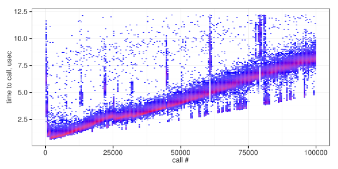

JMH: Pitfalls
JHM has a lot of pitfalls, and we are going to call out a few things to pay special attention to before you go off writing your first JMH microbenchmarks.
Scope is too small
Given that the word micro is in the name, we may be tempted to try to make them as small as can be. Testing tiny scopes of code like appending to a buffer, or sorting an array thats 2 elements. So, how do we know when we cross that line?
The time can be a good hint. Lets say multi-unit benchmark, which covers the time it takes to fully process some unit of work and send its result downstream is \(t\). In general, the unit we are benchmarking accounts for less than \(\frac{t}{10}\) time we should be skeptical that we our unit to benchmark is large enough. That is aggregrated across all calls to our unit though. So if we have many calls to that unit, a smaller scope may be appropriate. But even then, very small scopes can cause problems.
Loosing sight of the bigger picture
Related to the scope being too small. Sometimes we just lose sight of whats really going on in the system. Microbenchmarking some edge case, or something we expect to happen very rarely can be counter productive.
Not knowing what you want to measure
JMH is a tool to run experiments, in the same way that chemistry lab is setup to run chemistry experiments. It still requires a thoughtful scientist to design meaningful experiments and interpret results. Most of all, that scientist must question their methods and conclusions. This puts a lot of responsibility on you, as the scientist!
If you feel that its helpful, write up what you are trying to measure before you start working on the benchmarks. Have a review after you are done by a co-worker to validate that your benchmark is doing what you expect. Convert the numbers into meaningful conclusions and, again, get them validated by a peer.
Often times, we aren't trying to optimize just for response time, but also variability. Things like allocations can cause garbage collection pauses down the line. High variability in the run time of your applications code can cause erratic queuing time behavior.
Measuring external systems
JMH is designed to measure the time it takes for a method to execute. If that method depends on a remote service, or makes a blocking network call, that can invalidate results. Tests like this are best run as component or integration benchmarks rather than microbenchmarks.
If you feel the need to execute these as microbenchmarks, try to insert a mocked service into the code path to avoid the network call. If you really need the network call, deploy a dedicated instance of the service locally.
Measuring queues by accident
Microbenchmarks excel at directly measuring service time of our code. But once we introduce multiple threads working in concert in a pipeline, we stop measuring service time and start to measure response time. This is because there must be a queue between the two threads. Typically this is a sizeable queue, but evn if its one element, our benchmark is going to behave in a wonky way.
Lets first look at a queue depth of 1. When we have a queue depth of 1, our caller will have to block when it attempts to enqueue the item, or drop it.
sequenceDiagram
participant BenchmarkThread
participant Queue
participant WorkerThread
note right of BenchmarkThread: Start Sample 1
loop Enqueue Item1
BenchmarkThread->>Queue: Item 1
end
note right of BenchmarkThread: End Sample 1
note right of BenchmarkThread: Start Sample 2
loop Enqueue Item2
BenchmarkThread->>Queue: Item 2
end
WorkerThread->>Queue: Get Item 1
note right of BenchmarkThread: End Sample 2
note right of BenchmarkThread: Start Sample 3
loop Enqueue Item3
BenchmarkThread->>Queue: Item 3
end
WorkerThread->>WorkerThread: doing work
WorkerThread->>Queue: Get Item 2
note right of BenchmarkThread: End Sample 3
Above we see a sequence diagram where our queue size is 1. Our first sample is just the service time of the queue, so we got very lucky. Our second sample got slightly unlucky, and the queue was full when it got there and needed to block, waiting for space to free up. Which happens when the worker thread gets the first item from the queue. Sample 3 got the most unlucky, which had to wait for not only all of the work for item 1 to be completed, but also for a fetch from the queue.
But of course, there is some time between our samples, especially if we have a setup or tear down at the invocation level. Even then JMH does stuff between invocations in addition to our code. So we have no way of directly measuring work time
So, in our simple queuing example, what do we end up measuring exactly? Its not queue time, as we don't know the time between when Item 1 is put into the queue and when its removed from the queue. Very specifically, we are measuring response time with an unknown interarrival behavior at a known average interarrival rate. We will touch on this in our macro benchmarks chapters, but suffice to say, that is probably not what we are looking for.
If we need to measure the service time of the first thread of a multi-thread pipeline, we can do that in a way thats likely to produce valid results. We need to only do 3 things:
- Make our measurement iterations short enough such that they never fill up the queue. Compensating by having more measurement iterations.
- Make the queue large.
- Make sure you flush the queue in a
@TearDown(Level.Iteration)method. This ensures the queue doesn't fill up between runs.
If you are measuring a 3rd party library that doesn't expose a flush operation, our options are a little more limited. A last ditch can be to have a sleep timer in the teardown method, but finding the right time to sleep is its own experimental adventure!
Steady state
Aleksey Shipilëv puts it best in his blog Nanotrusting nanotime, in section Steady State Considerations. We have to be careful about what state is kept around between iterations. This is true of any unit or set of units that we are benchmarking which have their own state.
We have three practical options for managing this:
- Shorten the measurement time significantly. This doesn't really solve the problem, but for complexity that gros linearly, it can minimize the problem.
- Manually reset the state in the benchmark itself. If the benchmark is very long, a
@TearDown(Level.Invocation)method may make sense. But baselineing the reset may be difficult, especially if it isn't constant time. - Reverse the action taken. If you are implementing the command design pattern you may be able to undo or reverse the actions the benchmark took faster than it would be to fully reset the object. Even without applying the command pattern, many systems can have the reverse transaction done.
- Probabilistically steady-ish state. Create a set of input data which is net-0 and iterate it thru it. This prevents the state from diverging uncontrollably.
- Clone a known state at the start of each benchmark run. While sometimes expensive, each run has the exact same data and this is very easy to baseline.
With that said, we may WANT to see what happens as our object gets saturated with more and more and more state. Thinking of the Fibonachi example seen below, we have some options.

JMH is not a great tool for this though.
TODO figure this one out
© Erik Helleren, 2021. Built on 2021-06-08 from commit 1d1210ef. Buy me a coffee.